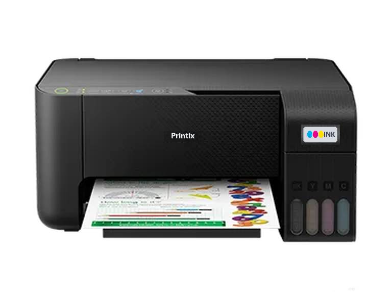

Aula antes do OSLab
O que é um driver?
O programa que ensina o computador a conversar com cada aparelho.
Hoje: instalar o driver de uma impressora do jeito certo.
12 missões práticas no OSLab
01 / O tradutor
Driver é um tradutor
Quando você clica em Imprimir, o aplicativo pede ao sistema. O sistema entrega ao driver, e o driver fala com a impressora.
Sem o driver, o Windows não sabe como usar o aparelho.
Impressora, placa de vídeo, Wi-Fi, mouse: todo dispositivo precisa de um driver.
02 / Sem driver
Dispositivo desconhecido
No Gerenciador de Dispositivos, um aparelho sem driver aparece em Outros dispositivos, com um triângulo amarelo.
A impressora pode estar perfeita: só falta o programa certo.
03 / Marca e modelo
Leia a etiqueta
Cada modelo tem o seu driver. Antes de pesquisar, anote a marca e o modelo exatos.
Nomes parecidos enganam: InkJet 2350, 2350 Pro, 2305 e 2530 são aparelhos diferentes.
04 / O seu computador
Qual é o sistema?
O driver também depende do sistema operacional: Windows ou macOS, 64 ou 32 bits.
Veja em Sistema › Sobre, no campo Tipo de sistema.
- Edição
- Windows 11 Pro
- Processador
- x64 de 4 núcleos, 2,40 GHz
- Tipo de sistema
- Sistema operacional de 64 bits, processador baseado em x64
05 / Pesquisa
Pesquise do jeito certo
Pesquisa vaga traz milhares de páginas. Pesquisa específica leva direto à página certa.
06 / Onde baixar
Só no site oficial
O driver confiável vem da fabricante. Leia o endereço antes de clicar.
Site da fabricante
suporte.printix.com.br- Nome da marca no endereço
- Busca por modelo
- Escolha do sistema
- Versão e data do driver
Site suspeito
baixardriversgratis.net- Endereço sem a marca
- Vários botões BAIXAR
- Anúncios e “atualizador milagroso”
- Pode instalar programas indesejados
07 / Qual arquivo?
Escolha o arquivo certo
A página do modelo mostra vários arquivos. Só um bate com tudo o que você anotou.
Driver fica no computador. Firmware é o programa que roda dentro da própria impressora.
08 / Instalação
Instale e conecte
Abra o arquivo baixado e siga o assistente.
Leia cada tela antes de clicar em Avançar.
- Abra o arquivo baixado no painel de downloads.
- Leia e aceite o contrato de licença.
- Conecte o cabo USB só quando o instalador pedir.
- Espere copiar os arquivos e clique em Concluir.
09 / Conferir
Confira no Gerenciador
Dê dois cliques na impressora e abra a guia Driver.
Ali estão o fornecedor, a data e a versão instalada.
- Fornecedor do Driver:
- Printix
- Data do Driver:
- 12/08/2026
- Versão do Driver:
- 3.1.0
10 / Testar e corrigir
Página de teste
Imprimir uma página de teste confirma que computador, driver e impressora conversam.
Se uma atualização estragar a impressão, Reverter Driver volta para a versão que funcionava.
Agora é com você
No OSLab
12 missões curtas com o robô guiando. Ao final de cada uma, responda à pergunta para ganhar 10 pontos.
Abrir a trilha de Drivers →- Leia marca e modelo na etiqueta
- Confira o tipo de sistema (64 bits)
- Pesquise marca + modelo + driver
- Baixe só do site oficial
- Escolha o arquivo certo e instale
- Confira, imprima o teste e reverta se precisar